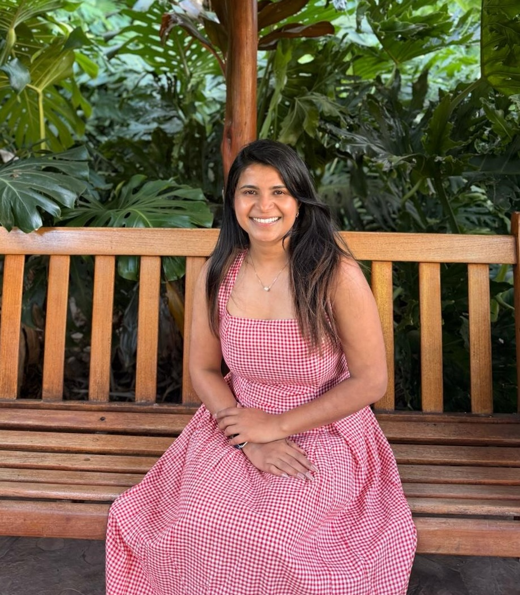

Consultant at Krystelis helping shape the India consulting team. Previously at Accenture & Syneos Health. ISB & IIT Delhi alumna who believes in living 20 years in a decade.

I'm a Consultant at Krystelis, currently helping build out the India consulting team. Before this, I spent two years at Accenture in Business Process Management Consulting, and three years at Syneos Health (formerly Kinapse), a life sciences consulting firm.
I completed my PGP in management from the Indian School of Business, and my B.Tech in Chemical Engineering from IIT Delhi.
My work has spanned process re-engineering, task mining, performance management, diagnostics, benchmarking, organisational assessment, resource modelling, change management, vendor management, and dashboard development.
Brief: Profiled 51 inflammatory bowel disease (Crohn's and UC) key opinion leaders across US and ex-US markets for a pharma client's advisory board and recommended the board's strategic discussion themes. Delivered in 15 days against a two-month manual baseline, and the workflow is now being built into Lucid's Fusion platform as a reusable, asset-tailored KOL profiling capability.
What it became: the template and workflow are being built into Lucid's core Fusion platform, so KOL profiles can be generated and tailored to a specific asset and indication instead of rebuilt from scratch for every engagement.
Brief: Produced due-diligence decks on bispecific antibody assets pairing TL1A with IL-17 and with IL-6, for a biotech client building its pipeline through in-licensing, to whom we provide ongoing strategic support on asset evaluation. Each deck covered mechanism, target biology, clinically proven indications, efficacy and safety benchmarks, study-design comparison, a recommendation on viable indications, and a deep-dive on every approved and discontinued asset against each target. The diligence supported the client's decision to move forward: non-binding term sheets were signed to in-license an IL-17A/F × TNF asset and an IL-17A × TL1A asset, and the client has since closed its Series B.
A full-stack tool for Med Comms teams to generate Mechanism of Action (MoA) scientific illustrations for pharmaceutical assets — combining PubMed research, LLM prompt engineering, and image generation in one workflow.
Open to conversations on life sciences consulting, strategy, and career opportunities. The best way to reach me is via LinkedIn or email.